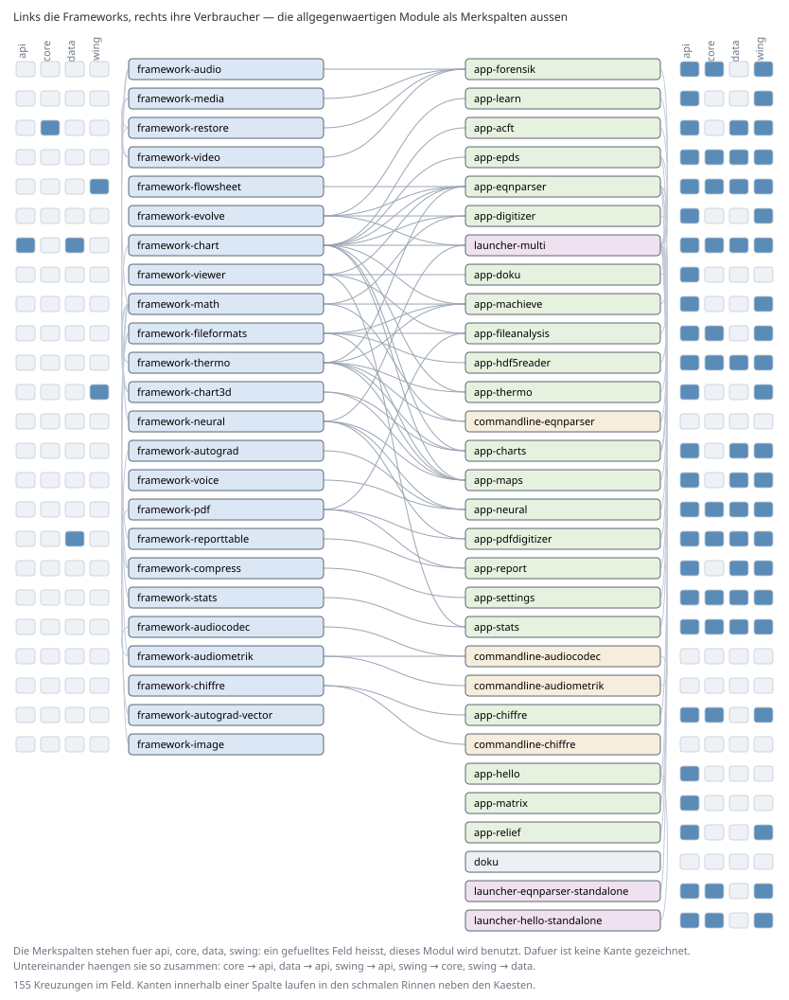

The envisionz framework at a glance
Function overviews of all framework modules and of the compute core commandline-eqnparser, as of 28 Sep 2026, plus overviews of all apps, command-line tools and launchers (as of 29 Sep 2026). Each page gives purpose, API, use in the framework, applications and examples for every method. Usage is counted in the source code.
gegenproben.datHow the modules fit together
On the left the framework modules, on the right the apps, command-line tools and launchers that use them. The four modules needed almost everywhere (api, core, data, swing) are not drawn as boxes but as marker columns at the sides: a filled cell means the module is used. The picture is generated from the Eclipse class paths (tools/Modulkarte.java), not drawn by hand.

.classpath files.Application framework
envisionz-framework-api
The contract between host and app
envisionz-framework-core
The foundation every app runs on
envisionz-framework-swing
One frame, nineteen apps, one way of working
envisionz-framework-viewer
Typesetting HTML, CSS, formulas and SVG – without a browser
Data and files
envisionz-framework-data
From the CSV cell to the triangle mesh – one data layer for every application
envisionz-framework-compress
Every compression format decoded in-house – without java.util.zip
envisionz-framework-fileformats
Read every file, change none
envisionz-framework-pdf
PDF and PostScript in pure Java – from the object to the painted glyph
envisionz-framework-reporttable
The operating-point report as a chain: source, dictionary, template, table
Visualisation
envisionz-framework-chart
Every chart type in one place – the applications only supply data
envisionz-framework-chart3d
3D charts with their own depth buffer – without OpenGL, without Orson Charts
envisionz-framework-flowsheet
Flowsheets that lay themselves out
envisionz-framework-image
Image filters in double, plane by plane
Computation and modelling
envisionz-framework-math
Numerics without third-party libraries
envisionz-framework-stats
Statistics as in R, as a compute core in Java
envisionz-framework-thermo
The one thermodynamics of the framework
envisionz-commandline-eqnparser
Describe, solve and check equation systems
Learning and search
envisionz-framework-autograd
Reverse-mode differentiation in pure Java – from tensor to language model
envisionz-framework-neural
Learning maps: surrogate models from our own networks
envisionz-framework-evolve
Searching for quality and diversity, for any application
Sound, image, video
envisionz-framework-audio
Reading, playing and recognising sound – without third-party libraries
envisionz-framework-audiocodec
Every sample comes back unchanged
envisionz-framework-audiometrik
Measure first, then encode
envisionz-framework-voice
A voice made from physics, not from recordings
envisionz-framework-media
From disc image to elementary stream, without inventing anything
envisionz-framework-video
Our own MPEG-1/2 decoder, measured against the standard
envisionz-framework-restore
Restore what is in the data – and prove what would be invented
Further
envisionz-framework-chiffre
Fifty historical ciphers – encrypt, recognise, break
Applications
envisionz-app-acft
Read, change and write back aircraft files without loss
envisionz-app-charts
Show tables as line, contour and 3D charts
envisionz-app-chiffre
Encrypt, decrypt, analyse and break classical ciphers
envisionz-app-digitizer
Turn families of curves in chart images into numbers
envisionz-app-prelimdesign
Read, compare and merge result folders of engine simulation runs
envisionz-app-eqnparser
Set up, solve and evaluate systems of equations
envisionz-app-fileanalysis
Reading and understanding arbitrary files: bytes, text structure, documents and images
envisionz-app-forensik
Inspect, restore, compare and document image and video material
envisionz-app-hdf5reader
Viewing HDF5 files: tree, value table and experiment catalogue, read-only
envisionz-app-hello
The smallest complete app: a note pad as a template for new applications
envisionz-app-learn
A workbench for the evolutionary search for good settings
envisionz-app-lupe
Magnifying stamps and small print, with a camera or images
envisionz-app-machieve
m-ACHIEVE: real-gas flow simulation for nozzles and cascades, as an app and on the command line
envisionz-app-maps
View compressor and turbine maps, derive further plots and compare them with measured data
envisionz-app-matrix
The running framework as a wireframe world
envisionz-app-neural
Neural networks for measured data and text, with judgement
envisionz-app-pdfdigitizer
Turning tables from PDF pages and scans into numbers
envisionz-app-relief
From photo to 3D relief without inventing depth
envisionz-app-report
Build reports from tables and export them as Word or PDF
envisionz-app-settings
The settings of the host in one place
envisionz-app-stats
A statistics workbench for CSV data
envisionz-app-thermo
Inspect and check property data, and calculate combustion
Command line and launchers
envisionz-commandline-audiocodec
An audio encoder on the command line, with batch mode
envisionz-commandline-audiometrik
An audio measurement chain on the command line
envisionz-commandline-chiffre
Encrypt, decrypt, analyse and break ciphers
envisionz-commandline-lupe
Magnifying images like the magnifier app, without a user interface
envisionz-launcher-*
The launchers: all apps in one window, or one app as a program of its own